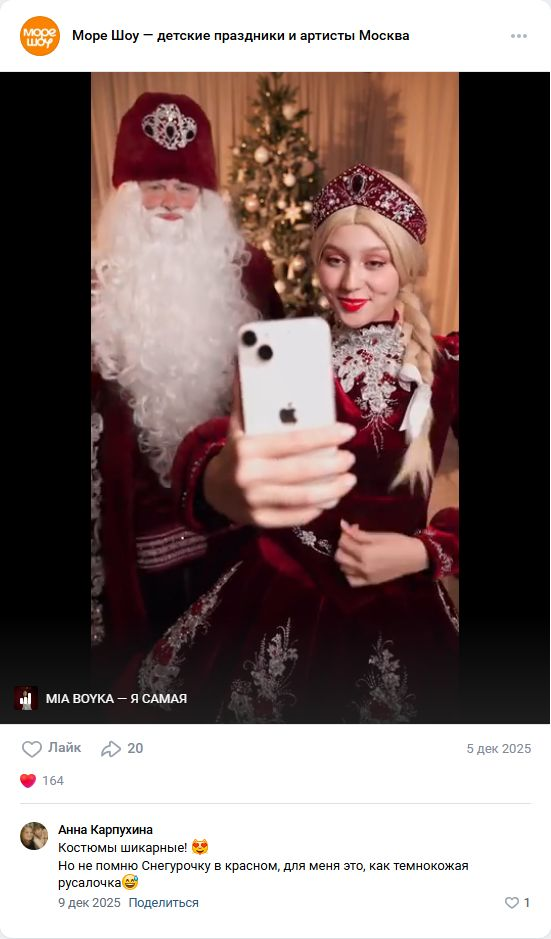
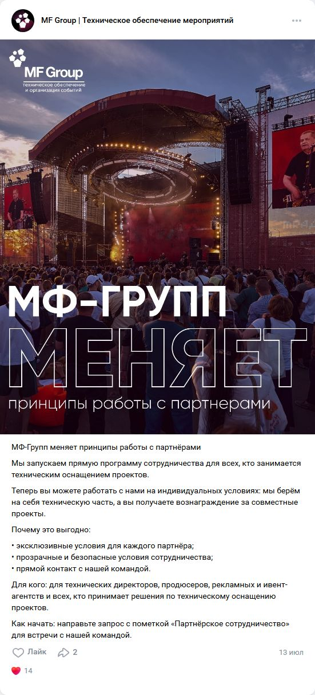

ВКонтакте: контент и рекламные форматы
Три разных источника: собственные посты конкурентов, оплаченные посевы в чужих группах и закрытые объявления VK Рекламы. Ниже — границы каждого наблюдения.
Посмотреть наблюдения, креативы и план теста
Органика на открытых стенах
Отчёт 33а: просмотрены 29 компаний, дополнительно 16 сообществ и 12 глубоких разборов. Из 29 компаний сообщество найдено у 21, за последний месяц публиковали 9. Медиана MF Group — около 4–5 лайков; просмотры и закрытый таргет здесь не изучались.
0 постов о технике в выборке
Отчёт 42: в 13 сообществах VK собраны 62 платных поста — 9 Event Hunt и 53 городских. Из них 9 постов от 4 ивент-рекламодателей; аренда звука, света, экранов и генераторов не найдена. Это «0» в данном срезе, не во всём ВКонтакте.
Фактически не изучались
Доступа к рекламным кабинетам конкурентов и закрытым объявлениям (dark posts) не было. Их наличие, креативы, расходы и результат неизвестны. Локальное наблюдение: по «аренда звука Пушкино» найдена одна небольшая группа из Королёва; это поиск сообществ, не аудит VK Рекламы.
Что зацепило аудиторию
Публичные реакции не равны заявкам, но помогают выбрать формат теста.

Персонажи, музыка, короткий сюжет
Дед Мороз и Снегурочка под узнаваемый трек
164 лайка и 20 репостов против медианы сообщества 4 лайка. У той же компании пост «Чёрная пятница −20%» — 1 лайк.

Партнёры реагируют на партнёрский формат
MF Group: программа для агентств и знакомство с технической командой
Лучший технический пост в выборке — 14 лайков. Презентация DA Sound для партнёров набрала 11 лайков, репост партнёра — 12.
Пример B2B-публикации: IQLAB
54-секундное видео + текст. «Надёжный подрядчик научных шоу для ивента»; «13 лет», «1 500+ мероприятий в год», «приезд за 30 минут», договор и постоплата; новым партнёрам — 5 000 ₽ на первый заказ. Призыв: «Пришлём партнёрский прайс и примеры программ» в Telegram. Один пост повторили через неделю.
Переносим структуру и снятие риска; не переносим неподтверждённые цифры, скидку или постоплату.
Открыть снимок креатива ↗Две кампании для будущего запуска
Кампания 1: агентства и event-подрядчики в Москве/МО → страница партнёрам → заявка с райдером.
Кампания 2: организаторы конференций / городских событий → кейс и форма расчёта.
Креативы: фото инженера + конкретная задача; короткий вертикальный ролик «до → решение → готовая площадка».
Эти кампании ещё не запускались. Разные аудитории и страницы — два отдельных пилота, не чистое A/B-сравнение. До запуска проверить пиксель и цели; оценивать квалифицированные обращения отдельно для каждой кампании.
Полный анализ сообществ ВКонтакте ↗ · Платные посты VK и Telegram ↗ · Сервисы мониторинга креативов VK ↗